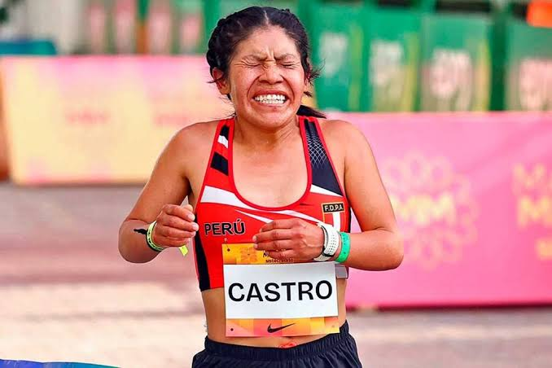
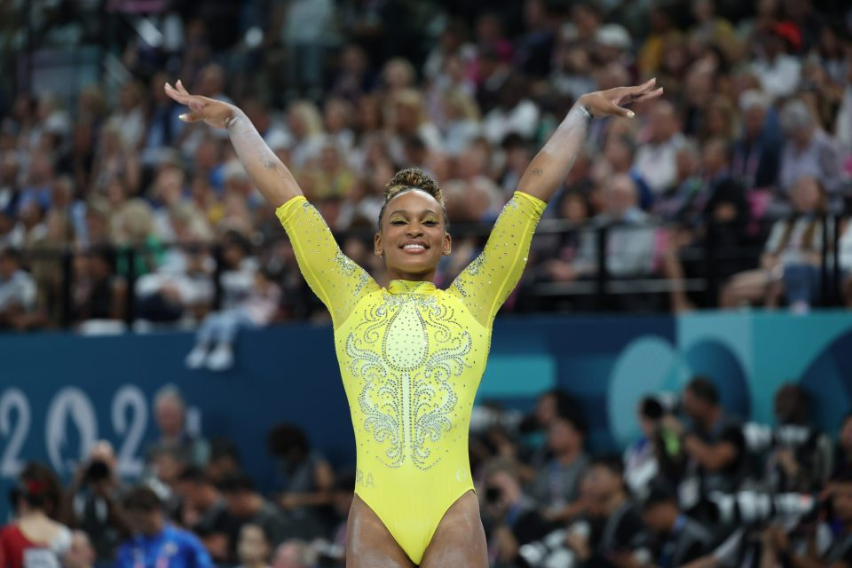
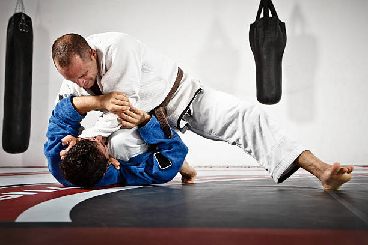

¡Orgullo Peruano! Deysi Castro Huamán se consagra campeona de la Maratón de Medellín 42K
La fondista huancavelicana se impuso en la competencia sudamericana, reafirmando su protagonismo en el atletismo y dando al Perú una segunda victoria consecutiva en esta competencia.
Leer más

Título de la noticia
La multicampeona olímpica, Simone Biles, participó en una conferencia de prensa y en una charla sobre salud mental, compartiendo un mensaje que trasciende el deporte e invita a poner el bienestar en el centro del camino hacia el éxito.
Leer más

JUAN DIEGO CONDE DESTACA EL CRECIMIENTO DEL JIU-JITSU Y PIDE APOYO PARA ESTE DEPORTE EN EL PERÚ
l deportista Juan Diego Conde destacó el crecimiento que viene experimentando el jiu-jitsu en el Perú, aunque señaló que esta disciplina todavía necesita una mayor difusión y respaldo institucional para continuar desarrollándose.
Leer más